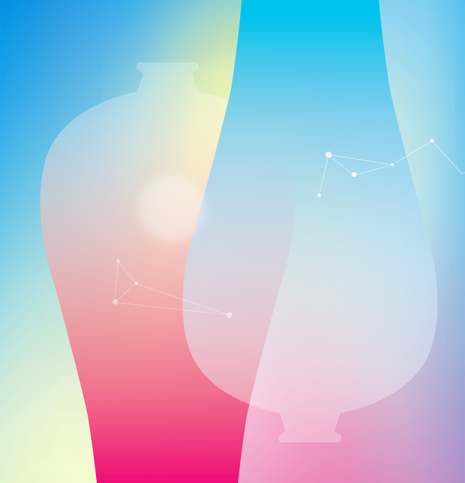

Porcelain & Ceramic PRODUCT 陶瓷設計組 法藍瓷光點計畫前身為2007至2016年間「 法藍瓷陶瓷設計大賽 FRANZ AWARD 」。在近年來... 01  Porcelain & Ceramic MEDIA 影片媒體組 法藍瓷光點計畫前身為2007至2016年間「 法藍瓷陶瓷設計大賽 FRANZ AWARD 」。在近年來... Project of Rising Star 法藍瓷光點計畫 法藍瓷光點計畫前身為2007至2016年間「 法藍瓷陶瓷設計大賽 FRANZ AWARD 」。在近年來... 法藍瓷光點計畫 CONCEPT 概念設計組 法藍瓷光點計畫前身為2007至2016年間「 法藍瓷陶瓷設計大賽 FRANZ AWARD 」。在近年來... 法藍瓷光點計畫 CONCEPT 概念設計組 法藍瓷光點計畫前身為2007至2016年間「法藍瓷陶瓷設計大賽 FRANZ AWARD」。在近年來...